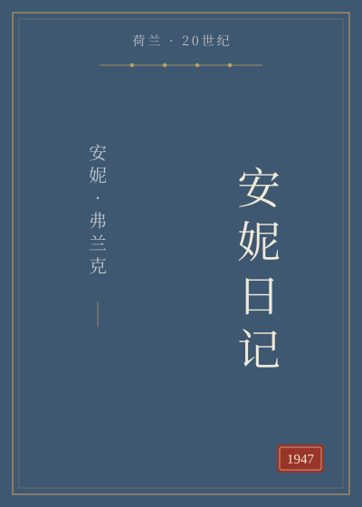
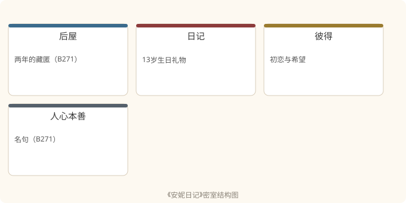

安妮日记
一、基本信息
| 作者 | 安妮·弗兰克 |
|---|---|
| 成书/出版 | 1947年荷兰文初版（Britannica：originally in Dutch, 1947） Anne Frank — Encyclopaedia Britannica（百科全书） |
| 国别/地区 | 荷兰 |
| 时代 | 现当代 · 20世纪 |
| 体裁 | 日记 |
| 语言 | 荷兰语 |

《安妮日记》密室结构图（主题·结构图）
二、创作背景
Britannica（B271）：'On June 12, 1942, she received a red-and-white plaid diary for her 13th birthday'；'the Franks went into hiding on July 6, 1942, in the backroom office and warehouse'——与范丹一家三口及费佛共8人藏于'后屋'。
地位（B271）：'became a classic of war literature, personalizing the Holocaust'；'translated into more than 65 languages……the most widely read diary of the Holocaust'。
三、内容脉络
1942—1944年的密室日记：成长、初恋（彼得）、恐惧与希望（通说）。
名句：'I still believe, in spite of everything, that people are really good at heart.'（'尽管这一切，我仍然相信人心本善'——B271 引用；中译为本库试译）。
四、主要人物表
| 人物 | 身份 | 说明 |
|---|---|---|
| 安妮 | 日记作者 | 13—15岁 |
| 彼得·范丹 | 藏匿少年 | 初恋对象（通说待核） |
五、主题与艺术特点
- '使大屠杀个人化'（B271：personalizing the Holocaust）。
- 密室中的成长（通说）。
- 对人性之善的信念（B271 名句）。
六、影响与评论
- Britannica：'translated into more than 65 languages……the most widely read diary of the Holocaust'（B271）。
Anne Frank — Encyclopaedia Britannica（百科全书） - Britannica：'became a classic of war literature'（B271）。
Anne Frank — Encyclopaedia Britannica（百科全书）
七、阅读建议
难点
- 日记体与编辑痕迹（B271 语境：父亲整理）。
- 大屠杀历史背景。
- 《安妮日记》（人民文学出版社/译林出版社版本，通说待核）。
- 英文版（公有领域渐近）。
对照《古拉格群岛》《二手时间》：三种'个人记录'。
八、待核实
- 荷兰文书名 Het Achterhuis（'后屋'）核对。
- 日记三版本（A/B/C）细节待核。
- 密室地址（Prinsengracht 263）待核。
本页主要来源
安妮·弗兰克的其他收录作品：安妮日记